들어가며
장애인을 장애인이라 부르는게 한때 쉽지 않았다. 그래서 장애우로 높여 부르거나 되도록 입에 담지 않았다. 왜냐하면 부정적인 의미를 담고 있는 단어라고 생각했기 때문에 장애를 갖고 있는 사회적 약자를 위한 배려이자 무언의 약속같이 느껴졌다.
과연 장애인은 이러한 배려를 받고 싶어할까? 아니다. 이것은 사회 제도가 불러온 선입견에 불과 하다. 그들은 비주체적인 존재로 규정하는 부적절한 단어인 장애우(友)라 불려지길 원하지 않았으며 잘못된 인식과 편견을 지양하고 장애인(人)이라 부르는것이 더이상 불편하지 않는 사회가 되어야 한다고 했다.
장애에 대한 올바른 인식
전체 장애인 중 10%는 선천적 장애인, 90%는 중도 장애인에 해당된다. 장애를 갖게 되면 수용하 는 과정 중에서 직면하게 되는 현실과 사회의 차별을 경험하게 된다. 신체의 손상은 그들이 원하지 않아도 장애인이라는 이유로 지나친 도움을 받기 때문에 주체적인 행동을 할 기회를 놓쳐버린다. 그러므로 정체성 상실과 자존감 하락으로 인해 장애를 받아들이기 더 힘들게 된다. 그들이 겪는 문 제를 인지하고 잘못된 인식을 변화하기 위해 디자인은 어떤 역할을 해야 할지 고민하면서 본 프로 젝트가 시작되었다.
비장애인들이 별생각 없이 쓰던 일상의 생활용품도 장애인용 제품으로 나누어져있다. 필요에 따라 도움을 받아야하는 장애인용 제품이지만 이러한 문화는 그들을 격리시키고 더 나아가 사생활 침해까지 야기한다. 이러한 부분에 올바른 이해를 바탕으로 그들의 자존감 고취와 장애인 인식 개선을 위한 모두의 디자인이 필요하다고 생각했다. 인간의 평등이라는 사회적인 메시지를 담고 있어 목적이 분명한 브랜드가 디자인을 통해 지향하는 바를 잘 전달하고, 올바른 인식을 통해서 나오는 올바른 디자인이란 어떤것인지에 대해 알아보는 것을 이번 프로젝트의 목표로 삼았다.
eone를 선택한 이유
장애가 있는 사람으로서 일상생활에서 겪는 불편함은 반드시 있다. eone은 시각장애인들이 시간을 알기 위해선 잘 들리지 않는 말하는 시계나 고장나기 쉬운 촉각시계를 사용해야 하는 불편함과 멋진 시계를 갖고 싶지만 장애인용 제품이 주는 좁은 선택지의 아쉬움을 알았다. 그 고민을 개선하고자 디자인을 재해석하여 보다 나은 시계를 만들어 시각장애인의 경험을 증진시키는 역할을 하고 있기에 eone을 선택했다.
eone이란?
'이원(eone)’은 ‘Everyone’을 줄여서 만든 이름이다. 모두를 포함하는 디자인이기 때문에 회사 로고도 ‘디자인 포 에브리원(Design for everyone)’이다.
eone 이해하기
회사의 탄생
김형수 대표는 대학원 과정 중에 알게된 시각장애인 친구를 통해 비장애인의 시계와는 사뭇 다른 2가지 타입의 시각장애인 시계가 존재한다는걸 알게되었다. 그 친구는 말하는 시계를 갖고 있음에 도 불구하고 귀찮게 계속 시간을 물어보았다고 한다. 그 이유는 조용한 강의실에서는 말하는 시계를 작동시킬 수 없었기 때문이다. 또한 사생활을 방해받지 않고 시간을 확인하고 싶어했다. 그 다음날 친구는 촉각을 이용한 아날로그 시계를 갖고 왔다. 촉각시계는 뚜껑을 열고 바늘이 움직이지 않게 만져야 하는 섬세함이 필요했으며 선천적 시각장애인보다 촉각의 감지능력이 떨어지는 중도 시각장애인들에겐 정확도와 고장이 많은 문제있는 시계였다. 장애가 심하지 않은 사람들은 말한다. ‘편의를 위해 개발된 점자시계조차 투박해요. 장애인용 제품이 아닌 더 멋지고 세련된 시계를 갖고 싶어요.’ 라고 말이다. 그래서 모두를 포함하는 제품이야말로 나아가야할 방향이라고 생각하여 시계가 개발되기까지 많은 인터뷰와 프로토타입을 만들며 eone의 시계를 만들었다.
-
말하는 시계
-
점자 시계
-
촉각 시계
-
eone
프로토타입
eone의 상징적 언어
브래들리 스나이더는 군복무 중 폭발 사고로 인해 두 눈의 시력을 잃었다. 중도 시각장애인이 된 그는 좌절할 수 도 있었지만 다시금 새로운 목표를 잡아 세계기록을 깨며 패럴림픽 금메달리스트가 되었다. 그가 자신의 상황을 극복하기까지 힘들었던건 장애가 아닌 달라진 사회 시스템과 선입견이라고 말했다. 이 선입견을 깨기 위해 그는 목표로 한다면 내가 가진 장애는 장애물이 되지 않고 극복할 수 있다는 것을 보여주고 싶어했다. eone은 브래들리 스나이더를 통해 많은 사람들이 자신감을 가지는데 도움을 주며 eone이 지향하는 바를 효과적으로 전달 할 수 있는 사람이라고 생각했다. eone의 궁극적인 가치를 대변해줄 수 있는 사람이기에 시계에 ‘브래들리’의 이름을 붙여 브랜드의 상징적인 언어로 정의하였다.
Watch 아닌 Timepiece?
브래들리 타임피스에 대하여
브래들리 타임피스는 눈으로 보거나 소리로 알려주는 시계 대신 손으로 만져서 시간을 알 수 있는 시계이다. 정면의 구슬은 분침을, 측면의 구슬은 시침을 나타낸다. 구슬은 자석으로 연결되어 있어 구슬을 만졌을 때 구슬이 움직이더라도 시간이 반드시 제자리로 돌아온다. 만져야 한다는 특성때문에 견고한 티타늄으로 만들어졌고, 중심이 되는 12시는 삼각형, 3시, 6시, 9시의 마크는 알기 쉽도록 길게 디자인하였다. 장애인용 시계가 아닌 패션 시계이기에 시각장애인이든 비시각장애인이든 공통의 경험을 나눔으로써 더 많이 이해할 수 있고 다가갈 수 있다.
문제점
잘못된 정보 전달 방법
eone은 멋진 시계를 갖고 싶어하는 시각장애인들을 위해 만들어졌다. 시간을 만짐으로써 이해하고 다가가고자 하는 마음이 연결되어 장애인과 비장애인으로 경계짓지 않는 모두의 가치를 위해 모두를 위한 디자인을 하겠다고 이야기했다. 이렇듯 eone만이 갖고있는 스토리텔링은 부족하지 않다. 다만 영상으로 대체된 전달방법으로 인해 사이트내에서의 정보전달력이 부족해졌으며 평등 이라는 본질에 충실하지 못했다. 스토리텔링의 부재는 브랜드 정체성의 혼란까지 야기시킬 수 있기 때문에 eone이 추구하고자 하는 본질을 잘 전달하면서도 시계가 갖고 있는 심미적 완성도를 극대화해야한다.
잘못된 이미지 메이킹
기존 사이트는 스토리텔링을 집중적으로 내세우지 않아 일반적인 시계를 판매하는 사이트같다. 물론 스토리텔링에 집중했다면 사람들은 올바른 시선으로 타임피스를 바라보지 않았을 것이다. 왜냐하면 장애를 내세운 스토리텔링은 사회적 기업으로 보여질 가능성이 있으며 동시에 동정에 호소하는 것처럼 보여질 수 있기 때문이다.
또한 브랜드의 방향성은 장애의 요소를 내세우지 않기 위해 자연스러운 포즈로 시계를 찬 사람의 사진을 백그라운드로 쌓아올려 패션에 집중되도록 하였다. 하지만 타임리스가 갖고 있는 의미전달에 치중한 나머지 시계 브랜드임에도 불구하고 제품 자체에 대한 공격적인 어필이 부족하여 패션시계라는 이미지 메이킹에 실패했다.
eone이 ‘모두를 위한 디자인’이라는 메시지를 전달하고자 한다. 하지만 일반적으로 ‘모두를 위해 디자인했어요.’ 라고 말하는 경우가 있을까? 없을 것이다. ‘모두’에 초점을 둔 나머지 특정대상을 언급하게 됨으로서 이분법적인 사고방식을 머리속에 각인시키게 된다. 차별하고 싶지 않아 모두가 되었지만 모두라는 단어자체가 장애인용 제품이라는걸 반대로 어필하게 된다는 것이다.
이러한 구성은 비장애인의 소비로 이어지지 않을뿐더러 사람들은 이런 이야기를 듣고 싶은게 아니다. 이 진부함의 요소를 처음부터 꺼내들지 않고 브랜드의 핵심을 먼저 전달하는게 구조설계의 순서이다.
상징언어 표현의 부재
현재 사이트의 상품명 앞에 ‘브래들리’라는 이름이 붙는다. 처음 사이트에 들어와 시계를 구매하고자 할때 소비자들은 시각적인 정보에 의존한다. 시계의 디자인과 상품명이 소비자들에게 전달되는 정보의 전부일 것이다. 과연 브래들리라는 단어를 유심있게 본 사람이 몇명이나 될까? 아마 소비자들은 상품명앞의 이 단어가 브랜드를 대표하는 상징적 언어로 eone이 추구하는 가치와 미션을 대변 하는 사람이라는 것을 모르고 지나칠 것이다. 이것은 소비자들의 구매결정을 내리는데 필요할 수도 있는 정보이며 또한 구매하락으로 이어질 수 있다는 문제점이 있다.

개선안
상징언어를 이용한 콘텐츠 구성
상징적 언어는 브랜드에 대한 신뢰와 정서적으로 고객들과의 친밀한 관계 형성에 영향력을 주기 때문에 일반적인 시계들과는 차별화된 의미를 갖고 있다. 특별한 이름을 갖고 있다는 것은 장점이자 단점이라고 생각한다. 고객들의 구매결정에 필요할 수도 있는 정보이기 때문에 일관성 있게 이름을 유지해야하며 브랜드 안에서 규칙을 정하고 특징을 보호하기 위해 노력해야 하기 때문이다. 그러므로 정의된 단어를 이해하고 경험할 수 있도록 상징적인 언어를 통한 구체적인 표현으로 고객들과 소통할 기회를 제공하는 컨텐츠 구성을 고려해야한다.
브랜드 아이덴티티의 재해석
타임피스를 통해 디자인의 목적과 본질을 명확히 하여 그 역할을 제대로 수행하는 올바른 브랜드라는 이미지를 전달하고자 했다. 올바른 인식을 가진 브랜드가 끼치는 영향력에 대해 설명하고자 하였고, 타임피스를 통해 느끼고 해석하는것에 그치지 않고 사람들의 행동까지 이끌어낼 수 있기에 소통하는 디자인으로 방향성을 잡았다. 제대로된 디자인 시선으로 내면와 외면을 모두 갖춘 가치있는 디자인이야말로 같이의 의미를 설명할 수 있다.
Brand Keyword
medium, beholder, rightness
Message
Take to time ( 시간을 만지다 )
타임피스만이 들려줄 수 있는 이야기
진부한 스토리텔링에 관심 없는 사용자들은 과연 어떤 내용에 관심을 가질까? 시각장애인들의 테스트와 실패를 거쳐 만들어진 시계는 구슬의 촉감으로 시간을 어떻게 알 수 있도록 만들어졌 는지 그리고 특별히 워치라 불리지 않는 타임피스의 웨어러블한 디자인에 대해 알고 싶어할 것이다. 또한 모두 라는 말로 디자인의 해석을 강요하는게 아니라 구체적인 언급을 하지 않아도 동의가 되는 표현을 해야한다. 대상이 사라진다면 오직 행위만이 남을 것이고 ‘만지다’라는 행위가 전체의 이야기를 이끌어줄 것이기 때문이다. 결과적으로 시계 자체에 대한 이야기를 풀어나가는 것이 바로 eone이 보여줘야 할 핵심이다.
시간을 만질 수 있는 시계
디자인 방향성 제시
패션시계로 인식되는 가장 중요한 요소는 무엇일까? 아름다움을 사람들의 눈과 마음속에 담아내야 하는 것이 첫번째일 것이다. 기능과 형태의 완벽한 조화를 위해 그래픽 요소로 주목도를 높여 고객의 관심을 높여야한다. 타임피스는 시간을 만질 수 있는 시계이자 아름다움을 만질 수 있는 시계이기도 하다. 만질 수 없는 것을 만지는것 같은 느낌을 주기 위해 촉감의 메타포를 선택하였다. 매끄러운 구슬의 원형을 형상화하여 만지다 라는 촉각의 감각을 상징적으로 표현하였다.
만질 수 있기 때문에 볼 수 없는 곳에서 볼 수 있고, 빛이 없는 곳에서 오히려 빛을 발하기 때문에 어두운 배경을 디자인 요소로 선택하였다. 클로즈업 된 볼륨감있는 시계를 사이트의 첫 장면에 넣어 구슬과 티타늄의 메탈 질감을 어두운 배경의 동영상으로 표현하였다. 어두운 곳에서 빛이 나기에 만지고 싶고, 갖고 싶고 그리하여 사고싶게 하는 아름다움을 설명하였다.

페이퍼스케치 & 와이어프레임
1440 GRID

서체
JOSEFIN SANS
메탈의 질감을 표현해야하는 사이트에서 세련된 느낌을 표현하고자 고딕계열의 산세리프체인 Josefin Sans를 사용했다. x-height가 캡 높이의 절반으로 이례적인 비율을 갖고 있으며 다른 고딕체에 비해 끊기지 않는 흐름있는 구성으로 이음새 없이 만들어진 Josefin sans는 마치 메탈바디를 연상시킨다. 획의 끝부분은 획과 직각의 방향이며 뾰족하게 구성된 모퉁이는 금속재질의 날카로움을 표현할 수 있다.

윤고딕
시각장애인들의 웹접근성을 위해 서체 선택시 고려해야 할 요소들이 있다. 한글서체는 제목에 들어가는 영문서체와 다르게 본문에 들어가기 때문에 웹폰트에 최적화된 서체를 선택하는것이 가장 중요한 요소였다. 시각장애인들은 스크린 리더를 사용하여 화면에 나타난 정보를 음성으로 출력하여 화면을 읽는다. 때문에 선명하고 획이 고르게 보여 사이트에서 읽기 쉬운 클리어타입 방식으로 제작된 윤고딕체를 선택하였다.
디자인 과정
-
첫번째시안
-
두번째시안
최종 결과물
그리드 시스템
-
LARGE PC1200grid / 12column
코딩하면서
국내 브라우저 점유율에서 chrome은 데스크탑과 모바일에서 여전히 강세이기 때문에 브라우저 환경에 따른 태그의 지원여부를 계속 확인해야한다. 최근 chrome에서 video 태그와 관련된 이슈들이 많았고 끝내 브라우저 정책이 바뀌었다.
첫 장면에 video 태그를 사용하여 동영상을 자동재생시켜야 했기에 코드 수정은 불가피했다. video 태그는 internet explorer 9이상, chrome 4.0이상, Firefox 3.5이상, safari 4.0이상, Opera 10.5이상의 브라우저에서만 사용가능한 태그이며 이 이하의 버전의 경우는 재생이 되지 않는다.
바뀐 정책을 참고하여 video태그에 autoplay, muted, playsinline등 코드를 수정해보았지만 실패하였다. 결국 만든 동영상을 youtube에 게시하여 iframe 태그 속성에 링크를 넣고 재생했다.
시각장애인들이 eone 사이트를 이용하기 위해선 스크린리더라는 별도의 소프트웨어를 통해 접근해야한다. 또한 장애의 여부와는 상관없이 누구나 웹페이지에 접근해야하기 때문에 html 웹 표준을 준수하여 웹 접근성을 높이는것이 이번 코딩에 가장 중요한 핵심이었다.
음성을 통해 웹페이지에 담긴 정보를 이해하기 때문에 웹 표준을 준수하는것은 물론 타임피스가 갖고 있는 촉감의 메타포를 어떻게 잘 전달할지에 대해 한번더 생각하게 된 계기가 되었다.
이미지 태그는 갖고 있는 alt속성을 이용하여 이미지의 시각적 정보를 담지만 eone사이트 특성상 구체적인 이미지 설명을 추가하여 더욱 의미있는 마크업작업을 하였다.
내가 배운 것들
장애인에 대한 인식부족으로 인해 프로젝트의 큰 차질이 생겨 재설계를 해야했었다. 장애에 대한 스토리를 가지고 있는 브랜드는 당연히 사회에서 받는 장애인의 차별과 인권문제에 목소리를 내야한다고 생각했었다. 그래서 인간의 평등을 확인하는 패럴림픽을 예로 들면서 사회적인 메시지를 담아 차별없는 디자인에 초점을 두는 프로젝트를 진행하였고 처음 해보는 프로젝트였던 만큼 기획의 오류가 많았었다. 시각장애인에 초점을 둔 나머지 점점 사회적 기업으로 리디자인되었고 그제서야 선입견으로 점철된 타겟 설정의 오류를 발견했다. 장애인이 포함된 타겟층에 대한 이해부족으로 인해 기획 스토리를 전면 수정해야했고 장애인을 불쌍하게 여기고 무조건적인 도움을 주어야 한다는 편견에서 시작된 사고방식을 재정립해야했다.
장애인들은 의무감으로 하는 필요이상의 배려는 실례이며 이해도가 없는 도움은 오히려 무례하다고 한다. 나의 배려가 불편함을 줄 수 있다고 생각하지는 못했었다. 문제를 인지 한 후 이러한 이해도를 바탕으로 장애인에 대한 올바른 시선을 통해 디자인 방향성을 다시 잡을 수 있었고 오류의 원인은 조사에 있었다는 것을 깨달았다. 덕분에 올바른 시선을 통해 나오는 올바른 디자인이란 어떤것인지에 대해 알아볼 수 있는 기회였고 어줍잖은 나의 생각에 의존한 조사는 지양해야하며 깊이 있는 기획이 디자인 설계에 도움이 된다라는 것을 알았다.